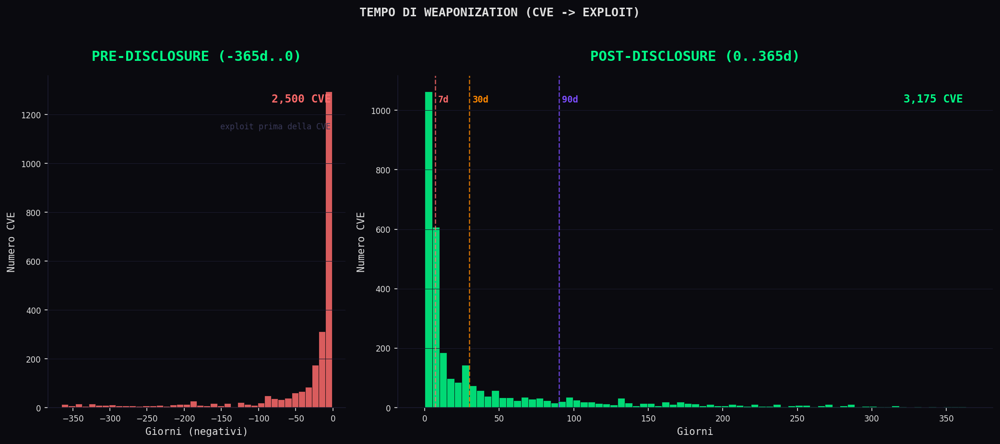
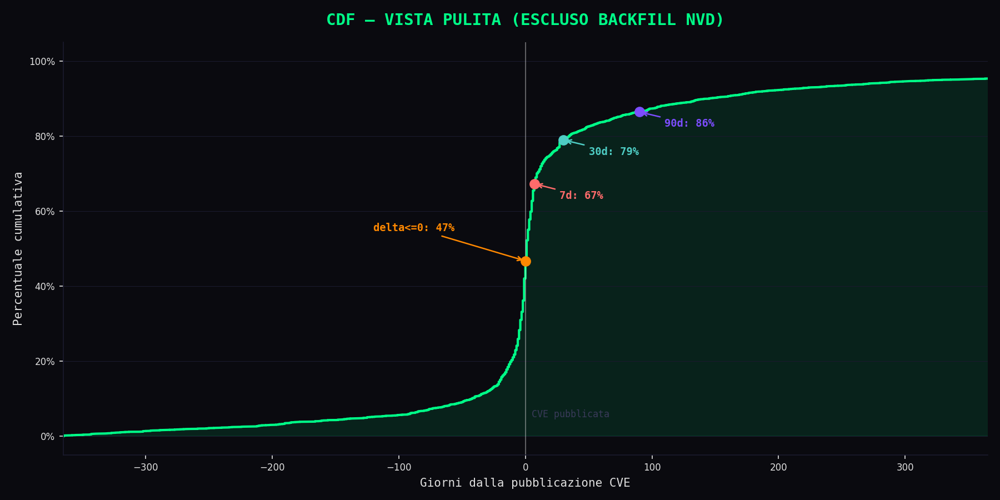
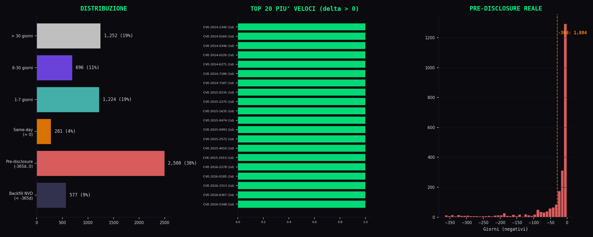
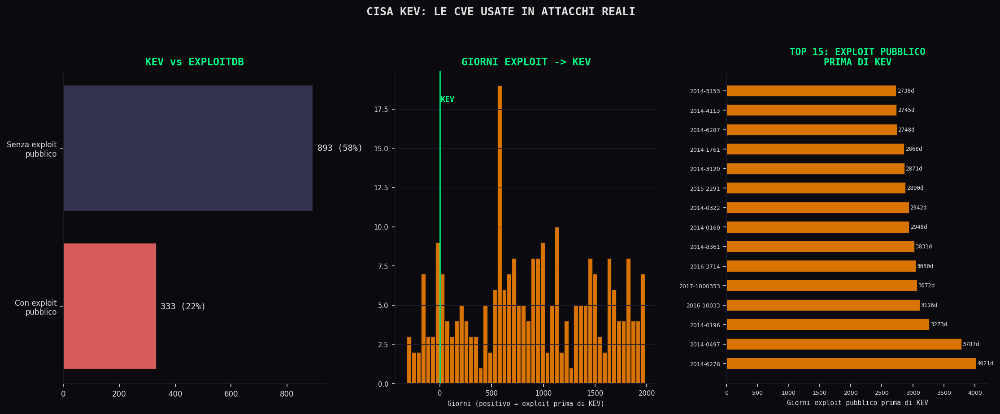

// Il Numero Che Non Guardi
Sezione 00. La domanda sbagliataTutti guardano il CVSS. E' il primo numero che cerchi quando esce una CVE. 9.8, critico, panico, patch immediata. 4.3, medio, ci pensiamo lunedi'. E' cosi' che funziona, in teoria.
In pratica, il CVSS ti dice quanto e' grave un bug. Non ti dice quanto velocemente qualcuno lo trasformera' in un exploit.
La domanda che nessuno fa e' questa: quanto tempo ho?
Non quanto e' grave. Quanto tempo passa tra il momento in cui una vulnerabilita' diventa pubblica e il momento in cui qualcuno la arma. Il delta. Il numero che decide se patchi in tempo o se sei gia' dentro la finestra di esposizione.
I dati per rispondere esistono. Sono pubblici. NVD ha le date di pubblicazione di ogni CVE dal 1999. ExploitDB ha le date degli exploit. Basta un join su CVE ID e un'operazione aritmetica.
Ma c'e' un dettaglio che cambia tutto: la data di pubblicazione su NVD non e' la data in cui il bug viene scoperto. E' la data in cui la burocrazia lo registra. L'exploit non aspetta la burocrazia.
L'ho fatto. Su 215,581 CVE e 24,924 exploit. Il risultato non e' quello che mi aspettavo.
Tesi. Una vulnerabilita' non e' un rischio quando viene scoperta. Lo diventa quando qualcuno la arma. I dati dicono che in un terzo dei casi, l'arma esiste gia' quando la CVE esce. E quando non esiste, arriva in giorni, non settimane. Il tempo che misuriamo e' quello pubblico. Quello reale e' sempre piu' corto.
// I Dataset
Sezione 01. Le due fontiServono due cose. Le date di nascita delle CVE e le date di nascita degli exploit. Tutto il resto e' rumore.
NIST NVD
Il National Vulnerability Database e' l'estensione analitica del MITRE CVE. Ogni entry contiene: CVE ID, data di pubblicazione, descrizione, CVSS score, vettore di attacco. L'API 2.0 e' pubblica, restituisce JSON, paginata a blocchi di 2000 risultati. Rate limit: 5 richieste ogni 30 secondi senza API key.
Quello che ci serve: cve_id e published_date. Fine.
Exploit Database
ExploitDB e' il mirror piu' grande di exploit pubblici. Il repository GitLab contiene un file CSV, files_exploits.csv, con ogni exploit indicizzato: ID, data di pubblicazione, piattaforma, e un campo codes che contiene i CVE ID associati.
Quello che ci serve: cve_id (estratto da codes con regex) e exploit_date. Fine.
Bias dichiarato. ExploitDB non copre tutto. Gli exploit privati, quelli venduti nei mercati underground, quelli usati da APT: non ci sono. Quello che misuriamo e' il tempo pubblico. Quello reale e' piu' corto. Questo non invalida l'analisi. La rende una stima conservativa.
// La Pipeline
Sezione 02. Quattro script, zero fuffaQuattro script Python. Nessuna dipendenza esotica. requests per le API, csv per i dati, matplotlib per i grafici. Tutto replicabile in 20 minuti.
Script 01: Fetch NVD
Scarica tutte le CVE pubblicate tra 2014 e 2024 dall'API NVD 2.0. Paginazione automatica, retry su errore, rispetta il rate limit. Output: un CSV con due colonne.
| 1 | # 01_fetch_nvd.py: il cuore e' qui |
| 2 | params = { |
| 3 | 'pubStartDate': '2014-01-01T00:00:00.000', |
| 4 | 'pubEndDate': '2024-12-31T23:59:59.999', |
| 5 | 'resultsPerPage': 2000, |
| 6 | 'startIndex': start_index |
| 7 | } |
| 8 | r = requests.get(API_URL, params=params) |
| 9 | # Estrai: cve_id, published[:10] |
Script 02: Fetch ExploitDB
Scarica il CSV completo dal mirror GitLab. Parsa il campo codes con una regex CVE-\d{4}-\d{4,}. Un exploit puo' mappare piu' CVE: li splitta. Output: un CSV con due colonne.
| 1 | # 02_fetch_exploitdb.py: regex sul campo codes |
| 2 | cve_pattern = re.compile(r'CVE-\d{4}-\d{4,}') |
| 3 | for row in reader: |
| 4 | cve_ids = cve_pattern.findall(row['codes']) |
| 5 | for cve_id in cve_ids: |
| 6 | rows.append((cve_id, date_published)) |
Script 03: Match e Delta
Carica i due CSV. Inner join su CVE ID. Per ogni match: Dt = exploit_date - published_date. Se una CVE ha piu' exploit, prende il primo (la data piu' vecchia). Output: CSV con quattro colonne.
| 1 | # 03_match_and_delta.py: l'operazione che conta |
| 2 | for cve_id, pub_date in nvd.items(): |
| 3 | if cve_id in exploits: |
| 4 | delta_days = (exploits[cve_id] - pub_date).days |
Il numero chiave. Il 47.1% delle CVE matchate ha delta negativo. Ma attenzione: una parte sono backfill, CVE pubblicate su NVD anni dopo che il bug era noto. Se filtri il rumore (delta < -365 giorni), restano 5,257 match puliti. E anche li', il 34% ha delta negativo: exploit pubblicato nei 12 mesi prima della CVE. La mediana della vista pulita resta vicina a zero.
// I Numeri
Sezione 03. Tre grafici, zero decorazioneLo script 04_plot.py genera tre grafici. Non dashboard, non infografiche. Tre visualizzazioni che rispondono a tre domande.
Grafico 1: Istogramma del tempo di weaponization
Due pannelli, uno per lato dello zero. A sinistra: le CVE con exploit pre-disclosure (da -365 a 0 giorni). A destra: le CVE con exploit post-pubblicazione (da 0 a 365 giorni). Le linee verticali marcano 7, 30 e 90 giorni.
A destra il picco e' schiacciato verso lo zero: la massa degli exploit arriva nei primissimi giorni. Ma il pannello sinistro e' denso: 1,804 CVE hanno exploit pubblicato nei 30 giorni prima della CVE. Non e' un'anomalia. E' il ricercatore che carica il PoC prima che NVD formalizzi.

Grafico 2: CDF: entro quanti giorni sei fregato
La CDF e' sulla vista pulita: esclude il backfill NVD (delta < -365) e mostra la distribuzione da -365 a +365 giorni. La linea verticale a zero marca il momento della pubblicazione CVE. Tutto cio' che sta a sinistra e' exploit pre-disclosure.
I marker segnano le soglie chiave:
| Finestra | % CVE (vista pulita) | Traduzione |
|---|---|---|
delta <= 0 |
~40% | Exploit gia' presente alla pubblicazione CVE |
entro 7 giorni |
~55% | Piu' della meta' |
entro 30 giorni |
~68% | Due su tre |
entro 90 giorni |
~78% | Tre su quattro |

Grafico 3: Outliers: i casi estremi
Il terzo grafico scompone il dataset in tre viste:
Breakdown per categorie. Il pannello sinistro separa backfill NVD (delta < -365 giorni, CVE pubblicate anni dopo il bug), pre-disclosure reale (-365..0 giorni, exploit prima della formalizzazione CVE), same-day, e le fasce post-pubblicazione. La categoria piu' pesante dopo il backfill e' la pre-disclosure reale: 1,804 CVE con exploit pubblicato nei 30 giorni prima della CVE.
Top 20 exploit piu' veloci. Il pannello centrale mostra le CVE con delta positivo piu' basso, quelle armate in 1-2 giorni dalla pubblicazione. Questi sono i casi in cui la weaponization e' stata quasi istantanea: advisory esce, exploit segue nelle ore successive.
Pre-disclosure reale. Il pannello destro zooma sulla distribuzione da -365 a 0 giorni. Il picco e' concentrato vicino a zero: il grosso degli exploit pre-disclosure arriva nei 30 giorni prima della CVE. Sono ricercatori che caricano il PoC prima che NVD formalizzi. La linea a -30 giorni mostra quanti cadono in quella finestra. Esempio tipico: un ricercatore trova una SQL injection, scrive il PoC, lo carica su ExploitDB. Il vendor viene notificato, patcha, e solo dopo MITRE assegna il CVE ID. Il bug era gia' patchato, il PoC gia' pubblico. Ma per NVD non esisteva ancora.

// Le CVE Che Contano Davvero
Sezione 04. CISA KEV: da possibilita' a realta'Finora abbiamo misurato cosa e' possibile: una CVE ha un exploit pubblico su ExploitDB. Ma avere un exploit non significa che qualcuno lo stia usando. ExploitDB e' pieno di PoC accademici che nessun attaccante ha mai toccato.
C'e' un terzo dataset che cambia il significato dei numeri: la Known Exploited Vulnerabilities (KEV) di CISA. Non e' un archivio di vulnerabilita'. E' una lista curata di CVE osservate in attacchi attivi nel mondo reale. Se una CVE e' nella KEV, qualcuno la sta usando in produzione.
Se ExploitDB misura cosa e' possibile, KEV misura cosa sta gia' succedendo.
Il catalogo KEV contiene 1,543 CVE. Di queste, 333 hanno anche un exploit pubblico su ExploitDB nel nostro dataset. Sono poche, ma sono quelle con evidenza pubblica sia di exploit che di uso reale.
La domanda: per queste 333 CVE, l'exploit pubblico esisteva gia' prima che CISA le aggiungesse al catalogo?
Il numero che taglia. Su 333 CVE KEV con exploit pubblico, l'88.9% aveva l'exploit disponibile su ExploitDB prima che CISA le aggiungesse al catalogo. Mediana: 1,071 giorni. Non e' il tempo dell'attacco. E' il ritardo con cui viene riconosciuto. L'exploit era pubblico, scaricabile, per quasi tre anni prima che il sistema dicesse "questa e' sotto attacco attivo".
| Metrica | Valore | Traduzione |
|---|---|---|
exploit prima di KEV |
88.9% | L'exploit era gia' pubblico |
mediana exploit->KEV |
1,071 giorni | Quasi 3 anni di esposizione |
> 1 anno prima |
79.0% | Quattro su cinque: exploit pubblico da oltre un anno |

Non tutte le vulnerabilita' con exploit vengono usate. Ma quelle nella KEV si'. E per queste, l'exploit non era un segreto. Era pubblico. Da anni.
Posizionamento corretto. KEV non e' una metrica temporale pura. E' un catalogo curato, biasato verso high-impact, e non ha date precise di primo sfruttamento. Quello che KEV aggiunge e' un filtro di rilevanza: separa i PoC accademici dalle armi usate in produzione. I numeri sopra non dicono "gli attacchi arrivano dopo 1,071 giorni". Dicono: "quando CISA conferma l'attacco, l'exploit era pubblico da 1,071 giorni".
// Cosa Significano
Sezione 05. I numeri non parlano da soliIl primo istinto e' dire "il 47% ha delta negativo, e' tutto pre-disclosure". Non e' cosi' semplice. Bisogna separare il segnale dal rumore.
Su 3,077 CVE con delta negativo, 1,273 hanno delta inferiore a -365 giorni. Sono backfill: NVD ha pubblicato la CVE anni dopo che il bug era gia' noto e sfruttato. CVE-2005-4891 ha delta -5,321 giorni: exploit del 2005, CVE pubblicata nel 2020. Non e' pre-disclosure, e' burocrazia in ritardo.
Tolto il backfill, restano 5,257 match. E qui i numeri sono puliti.
Vista pulita (5,257 CVE, escluso backfill NVD). Il 34% ha exploit pre-disclosure reale (da -365 a 0 giorni). Sono ricercatori che caricano il PoC su ExploitDB prima che NVD formalizzi la CVE. Il bug era noto, l'exploit circolava, la burocrazia non aveva ancora assegnato il numero. Sulla vista pulita, entro 7 giorni dalla CVE hai gia' oltre la meta' degli exploit disponibili.
Tre insight che escono dai dati:
1. La data NVD non e' la data del bug. La published_date su NVD e' un evento burocratico, non tecnico. La vulnerabilita' viene scoperta, comunicata al vendor, a volte patchata. Solo dopo, NVD pubblica. L'exploit non aspetta la burocrazia. Ecco perche' il delta e' spesso negativo: non perche' l'attaccante e' piu' veloce, ma perche' NVD e' piu' lento. Lo scenario tipico: il ricercatore trova il bug, scrive il PoC, lo carica su ExploitDB o GitHub. Giorni o settimane dopo, MITRE assegna il CVE ID e NVD pubblica. Delta negativo. Non significa che gli attaccanti siano piu' veloci del sistema. Significa che la CVE arriva dopo che il bug e' gia' pubblico.
2. Il CVSS non sembra predire la velocita'. Nei dati non emerge una correlazione chiara tra CVSS score e tempo di weaponization. Il CVSS misura l'impatto teorico, non l'attrattivita' per chi scrive exploit. I fattori che accelerano la weaponization sono probabilmente altri: disponibilita' del codice sorgente, complessita' dell'exploit, valore del target. Servirebbero dati CVSS per ogni CVE matchata per dimostrarlo, ed e' un possibile follow-up.
3. La finestra reale e' cortissima. Se guardi solo i delta positivi (exploit dopo la CVE), la concentrazione nei primi 7 giorni e' schiacciante. Non hai settimane per patchare. Hai giorni. E questo e' il tempo pubblico. Quello privato e' piu' corto.
// I Limiti
Sezione 06. Quello che non vediamoQuesto non e' un paper accademico e non finge di esserlo. I dati hanno limiti precisi.
Copertura. ExploitDB non ha tutti gli exploit del mondo. Ha quelli pubblici, quelli che qualcuno ha caricato. Gli exploit privati (quelli usati da APT, quelli venduti a broker come Zerodium, quelli che girano nei forum chiusi) non ci sono. La distribuzione reale e' spostata a sinistra: il tempo vero e' piu' corto di quello che misuriamo.
Backfill NVD. 1,273 CVE hanno delta inferiore a -365 giorni. NVD ha pubblicato queste entry anni dopo che il bug era noto. Non sono pre-disclosure. Sono ritardo burocratico. Li escludiamo dalla vista pulita, ma li documentiamo perche' raccontano un problema reale: NVD non e' un sistema real-time.
Date. La "data di pubblicazione" su ExploitDB e' la data di upload, non necessariamente la data in cui l'exploit e' stato scritto o usato per la prima volta. Potrebbe essere stato usato settimane prima. Stesso discorso per la data CVE: la vulnerabilita' potrebbe essere stata scoperta e comunicata al vendor mesi prima della pubblicazione pubblica.
Matching. Il join su CVE ID e' pulito ma non completo. Alcuni exploit su ExploitDB non hanno il CVE ID nel campo codes. Altri hanno CVE ID sbagliati. I falsi negativi esistono.
La frase giusta. "Su 6,530 CVE con exploit pubblico, 1,273 sono backfill NVD. Delle 5,257 restanti, il 34% ha exploit pre-disclosure. Tra quelle con delta positivo, la massa si concentra nei primi 7 giorni. Il tempo reale e' probabilmente piu' corto."
// Il Lab
Sezione 07. ReplicaloTutto il codice e' nella cartella scripts/il-bug-diventa-arma.
Lo script NVD richiede tempo (rate limit). ExploitDB e' immediato. Il matching e il plot richiedono secondi. Nessuna API key obbligatoria.
// Conclusione
Fine trasmissioneNon ho fatto machine learning. Non ho fatto clustering. Non ho fatto dashboard interattive. Ho preso tre dataset pubblici, li ho incrociati su una chiave comune, e ho fatto una sottrazione.
Il risultato non e' il numero che mi aspettavo. Il 47% con delta negativo sembrava una bomba. Poi ho separato il backfill NVD dal segnale vero. Il dato pulito e' meno sensazionale ma piu' onesto: il 34% ha exploit pre-disclosure reale, e tra i delta positivi la concentrazione nei primi giorni e' schiacciante. Quando ho aggiunto CISA KEV, il quadro e' peggiorato: per le CVE sotto attacco reale, l'exploit era pubblico da quasi tre anni prima che qualcuno lo riconoscesse.
La finestra di patching esiste. Ma non e' quella che pensi.
E il numero che dovresti guardare non e' il CVSS. E' il tempo.
E' quanto ci mettono a trasformarlo in arma."
I bug sono rumore. I dataset rivelano il pattern.